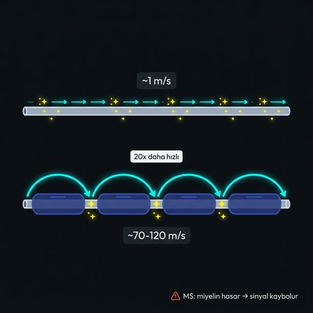

Aksiyon potansiyeli somada değil, axon hillock'ta başlar ve akson boyunca ilerler. Mekanizma basit: depolarize olan bölge komşu bölgeyi eşiğe iter, orada Na⁺ kanalları açılır. Dalga ileriye gider, geriye dönemez — geldiği yön refraktör periyottadır.
Miyelin kılıfsız aksonlarda akım ilerledikçe dışarı sızar ve zayıflar. Bu yüzden her noktada aksiyon potansiyeli yeniden üretilmek zorunda. Yavaş (~1 m/s) ve enerji pahalı.
Miyelin akımın sızmasını engelliyor — Ranvier düğümüne kadar güçlü kalıyor. Sadece düğümlerde aksiyon potansiyeli üretiliyor, miyelin segmentlerinde atlıyor. Çok hızlı (~70-120 m/s) ve enerji verimli.
Miyelin hasar görünce akım düğüme ulaşamadan kayboluyor. Sinyal zayıflıyor veya kesiliyor — kas kontrolü ve duyu kaybı bu yüzden oluşuyor.
Miyelin yalıtkan kablo — akım sızmaz, sinyal güçlü kalır. Olmadan her adımda yeniden başlamak zorundasın.
